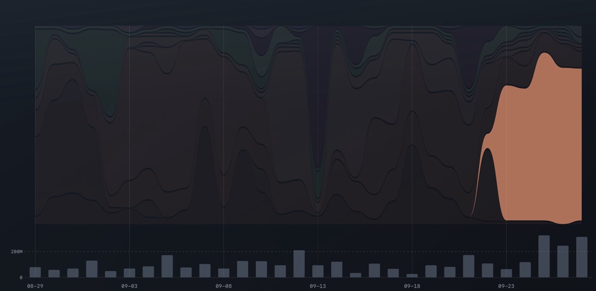
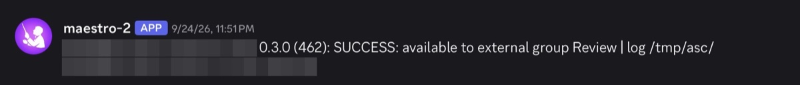
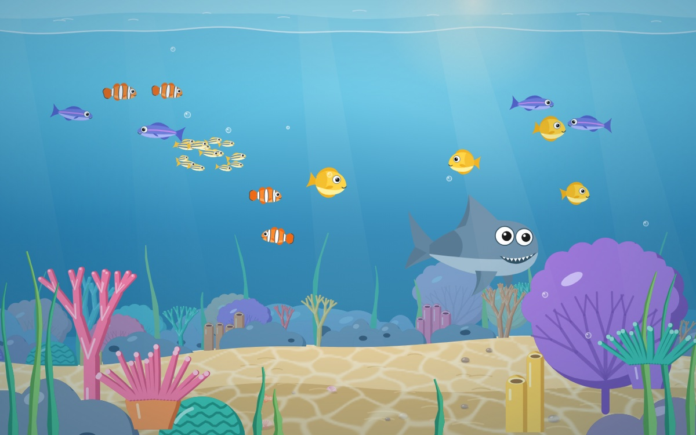

How I Spend My Tokens
The last thing the AI told me before my allowance ran out was that it was pushing my page to Confluence. It wasn't. When the allowance came back, I typed "Continue", and it did the exact same thing again.
Infinite tokens
In the beginning, it felt like I had infinite tokens. My AI subscription came from work, GitHub Copilot, and it didn't count words. It counted requests. One question was one request, no matter how much work the answer took.
That changes how you talk to an AI. A small instruction costs as much as a big one, so I stopped giving small ones. I gave it whole plans. I found Maestro, an app that hands an AI a checklist and lets it work down the list on its own, and I learned to write lists long enough to fill an afternoon.
Five-hour shifts, all night
Then I got a Claude subscription, and the meter changed. Claude counts tokens, and it hands them out in windows: a budget for every five hours, and a bigger one for the week.
I used AI all the time, so I had to be strict with myself. I moved what I could to local models, AIs running on my own laptop, and to free ones. I still ran out a couple of times.
When Claude announced Workflows, a way for one AI to run a whole team of helper AIs, I tried to get the most out of every window. I built a small tool, usage-check, so my AI could see how much was left, and I could give it more to do overnight.
One evening in June I planned a big run and told the AI to wait for the next window before starting. It set a timer for the reset, looked up the time a few minutes too late, got the reset after that one, and waited five hours for nothing.
Burned once, burned twice
Some tokens I didn't spend. They got burned.
Once I asked my research agent a small question about a build problem at work. It fanned the question out to 97 helper AIs. It came back with an answer. Since then, my AI has to ask me before it starts more than ten, and in the folder where I keep my notes, Workflows are switched off.
The other one still makes me laugh. Our iPad app has hundreds of settings, and years ago I wrote a script that turned them into a table I could paste into Confluence, the wiki where we keep our documentation. Nobody looked at it. This time I asked the AI to write the page itself, through a plug-in that lets it edit Confluence directly.
The page came out huge. To publish it through the plug-in, the AI had to type the whole page out again in a single answer, and that answer was longer than it is allowed to get. It ran out of room halfway. Its last message before my five hours were used up:
The whole page body is in context now. Pushing it to Confluence in one update.
Nothing got pushed.
When the window came back, I typed "Continue". It said it was updating the page, tried the same giant answer, and ran out of room again. Only then did it split the page into five. Forty-two minutes into my fresh window, almost 90% of it was gone.
So I asked a second AI to read the whole session and tell me what had happened. Its verdict on that last message: "'Pushing it' was false in the operational sense."
After burning once, I got burned twice.
I don't need to care about tokens anymore
Then Opus 5.5 arrived, and it became the AI model I use every day.
I used to keep a buffer, tokens saved up so I could still do the real work. Now I start three to five things in parallel without thinking about it. Each percent of my weekly allowance buys almost twice the tokens it did in the weeks before, I get about twice as much done, and I rarely hit the five-hour limit anymore.

It also works while I'm asleep. One session kept an eye on a new test version of my iPad app until Apple let it through to the testers, and messaged me on the chat app Discord at almost midnight. Another kept testing a big import at work while I slept.

The tokens go into tools that help my tools build tools, like the crash-report command from AXI All the Things.
The task I give every model
Every new model gets the same test from me: build a cartoon aquarium in a single web page, with a shark that looks like mine. I call it fish slop. It last swam through Lost in Compression.
Opus 5.5 built it in one go. It ran on medium effort, not even its highest setting.
